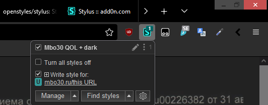

Я, как и думаю многие из вас, один из тех людей которые сидят подолгу перед монитором, зачастую ещё и не при самом хорошем внешнем освещении, что как известно не очень способствует сохранению хорошего зрения в длительной перспективе, особенно при работе с большими объемами текста.
Согласно исследованию (англ.) чтение чисто чёрного текста на чисто белом фоне излишне стимулирует определённые клетки глаза и может вызывать близорукость, тогда как при инверсии цветов ситуация улучшается. К сожалению не всё так просто и чисто белый текст на чисто чёрном фоне тоже не лучший вариант из-за т.н. эффекта "ореола", который заключается в размытости белого текста, который особенно сильно проявляется у людей с астигматизмом.
Выглядит это примерно так - слева то как видит здоровый человек, справа как человек с астигматизмом:
Поэтому в идеале контрастность должна быть сбалансирована, чего к сожалению нет в стандартной цветовой схеме.
По этой причине мной был написан юзерстиль для браузера. Сразу уточню, что я не профессиональный верстальщик и это просто моё хобби, которым я занимаюсь в свободное время, поэтому с технической точки зрения код не самый оптимальный, но в процессе тестирования особых ошибок я не обнаружил.
Для тех кто впервые слышит про юзерстили, то в двух словах это набор специальных комманд с помощью которых вы можете поменять внешний вид любой страницы в интернете под свой вкус. Чтобы использовать юзерстиль никаких особых знаний не требуется, вам нужно будет лишь нажать на пару кнопок.
Для начала нужно установить аддон (дополнение) для вашего браузера под названием Stylus. Вот ссылки для нескольких популярных браузеров, где нужно просто нажать на кнопку Install (установить):
Если вы пользуетесь другими браузерами, то они зачастую поддерживают установку аддонов из магазина приложений перечисленных выше браузеров, например яндекс браузер поддерживает установку аддонов из магаизина приложений для Оперы.
После установки аддона вам останется лишь установить сам юзерстиль по этой ссылке
Процесс ровно такой же - нажать на кнопку Install. Если вы захотите отключить юзерстиль и вернуться к стандартным цветам, просто отключите его нажав на галочку напротив названия в панели Stylus, которая обычно расположена в верхней правой части браузера:
Предупрежу что из-за резкой смены цветов вам почти наверняка будет неудобно и непривычно сразу после установки и потребуется определенноё время для привыкания, но не спешите отключать юзерстиль, попробуйте немного подождать и ваши глаза довольно быстро привыкнут. Мне на это потребовалось около двух часов.
При желании вы довольно просто можете найти юзерстили для большинства популярных сайтов, чтобы при переключении с рабочего сайта на какой-нибудь гугл вас не ослеплял резкий белый цвет фона. У многих сайтов (тот же гугл или вк) уже есть встроенная тёмная тема, которую можно включить в настройках внутри самого сайта, но если таковой не имеется, то сторонюю тёмную тему можно найти через Stylus. Для этого надо открыть панель инструментов Stylus и нажать на "Find Styles"
Зачастую темные темы висят в топе выдачи, но если вы не найдёте удовлетворяющую вас тему или страниц с результатами будет слишком много, то можно уточнить запрос набрав в строке поиска например "Dark" предварительно убрав галочку с "Also search global styles" чтобы поиск производился только для текущего сайта
Чтобы установить стиль просто нажмите на него и он тут же применится. Если он вам не понравится его можно будет тут же удалить повторно нажав на него в выдаче.
Тут наверное следует уточнить что не рекомендуется применять более одного стиля на один сайт одновременно, так как могут возникнуть ошибки.
Если же в итоге вы всё равно решите остаться на стандартном белом оформлении, то рекомендую вам пользоваться программой f.lux, которая регулирует цветопередачу по мере захода солнца в вашем регионе, смещаясь в более теплые цвета ночью и в более холодные днём, что также бережёт ваши глаза. Я например использую её даже с тёмными темами и её аналоги на телефонах.